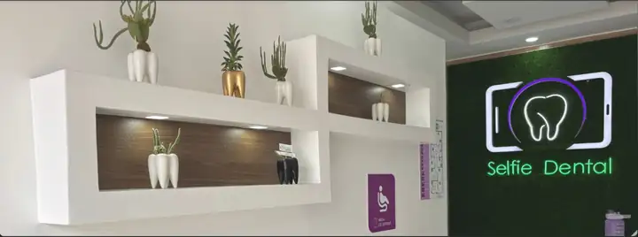
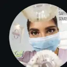

Diseño de sonrisa
Para quienes quieren mejorar forma, color o armonía de su sonrisa con una valoración personalizada.
Selfie Dental · Ibarra
Odontología cercana y personalizada. Cuéntanos qué quieres mejorar o resolver y te ayudamos a dar el siguiente paso.

Empieza por ti, no por la jerga
No necesitas saber el nombre técnico del tratamiento. Elige lo que más se parece a lo que buscas.
Más que “solo atenderte”
Selfie Dental ya comunica una idea valiosa: atención con pasión, detalle y un trato humano. La experiencia digital debe demostrarlo desde el primer contacto.

“Solucionamos lo que no te deja sonriír.”
Mensaje visible en el perfil de InstagramEl sistema detrás de la experiencia
La web es la entrada. El verdadero valor está en conectar captación, WhatsApp, agenda y seguimiento.
Explorar el CRM demoInstagram, Facebook, Google o recomendación.
Servicios explicados desde lo que quieres resolver.
Formulario breve, sin pasos innecesarios.
WhatsApp recibe el contexto y el equipo sigue la conversación.
La solicitud queda organizada hasta la cita.
Tratamientos
En producción, cada servicio tendrá su propia página para campañas, SEO local y preguntas frecuentes.
Para quienes quieren mejorar forma, color o armonía de su sonrisa con una valoración personalizada.
Alineación dental y seguimiento del proceso.
Reparación dental orientada a recuperar función y apariencia.
Atención especializada cuando el caso lo requiere.
Atención dental para niños con un enfoque cercano.
No tienes que saber qué tratamiento necesitas
Selfie Dental
Av. Juan de la Roca y Av. Ricardo Sánchez, pasaje 8-19, sector Pilanquí. Dirección tomada del perfil público compartido para esta demo.